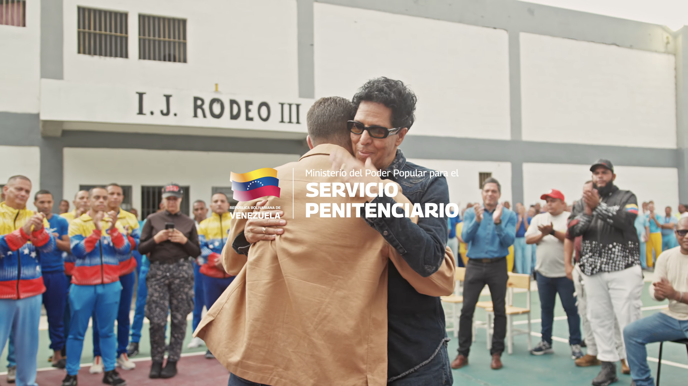

31 músicos de la Orquesta Penitenciaria se unen al legendario maestro Bonny Cepeda en la histórica Plaza El Venezolano de Caracas. Un hito de rigor artístico y redención nacido de la alianza entre El Sistema (PAP) y el Ministerio del Servicio Penitenciario.

Vivimos una jornada histórica durante el ensayo general de la Orquesta Libertad Musical, quienes compartieron escenario y partituras con el maestro Bonny Cepeda, afinando cada acorde de un montaje de gran nivel artístico.
Durante la jornada, el Ministro del Poder Popular para el Servicio Penitenciario, Julio García Zerpa, asistió a las instalaciones para constatar de primera mano el trabajo, la mística y el compromiso de los privados de libertad. Bonny Cepeda lo recibió personalmente para guiar el recorrido y mostrar la magnitud de este despliegue musical, demostrando cómo la cultura se consolida como una herramienta real de transformación humana y redención. La disciplina, el arte y la esperanza resuenan con fuerza en El Rodeo III.
El Programa Académico Penitenciario es una iniciativa de El Sistema desarrollada de manera conjunta con el Ministerio del Poder Popular para el Servicio Penitenciario, brindando herramientas de superación, educación formal y excelencia musical dentro de los centros de formación integral del país.